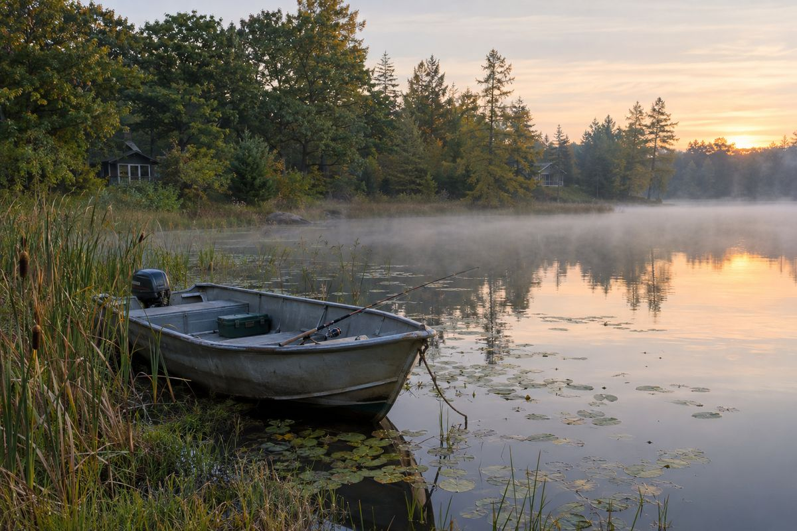

Home Fundraising
FundraisingCaring for the lake together
Gifts to the Lake Program Fund lower every owner's share of the lake program, and the Neighbor Fund makes sure no neighbor is left behind.
Our Giving and Grants Committee raises both funds through the annual gift, grants, business sponsors and descendants of Wild Goose Lake families, and reports each fund\'s balance and the coming year\'s need at the annual meeting.
Where your gift goes: the Lake Program Fund. Unless you tell us otherwise, your gift goes into the association's general Lake Program Fund. Before Washtenaw County divides the yearly cost of the lake program among the properties on the roll, the association pays the County what the Lake Program Fund has raised. The County subtracts that money first, so every owner on the roll, lakefront and lake-access alike, sees a smaller lake charge on the winter tax bill, reduced by the same percentage for everyone. The more we raise together, the less each of us pays. One thing to know: before the association pays the County, the Board sets aside from this same fund whatever the Neighbor Fund needs that year, based on the applications received. So the amount that lowers everyone's bill is what remains after neighbors in genuine need have been helped, and the Board reports both figures to members every year.
The Neighbor Fund: a separate back-up. The Neighbor Fund is kept apart from the Lake Program Fund and does not lower the roll. It exists for the few households that still cannot afford the lake charge, even after the Lake Program Fund has brought it down, because of a low income, age or disability. It pays that household's charge directly to the Township. Applications are confidential and reviewed by a three-person committee that includes someone from outside the lake. You can designate a gift to the Neighbor Fund if you wish. Our promise: no one on Wild Goose Lake loses their home or land because of the cost of caring for the lake.
Give to the Lake Program Fund
We ask every association member and our community partners to make a charitable donation to the Lake Program Fund once a year, in whatever amount is right for you.
How to give. Until our online giving page is ready, email the Treasurer and we will send you how to give by check or electronically.
We are applying to the IRS for 501(c)(3) tax-exempt status. Until it is approved, we can't confirm that gifts are tax-deductible.
Your gift helps pay for the lake program:
- Water testing through the open-water season
- Aquatic plant surveys and invasive species control
- Boater education and clean-boat practices to keep invasive species out